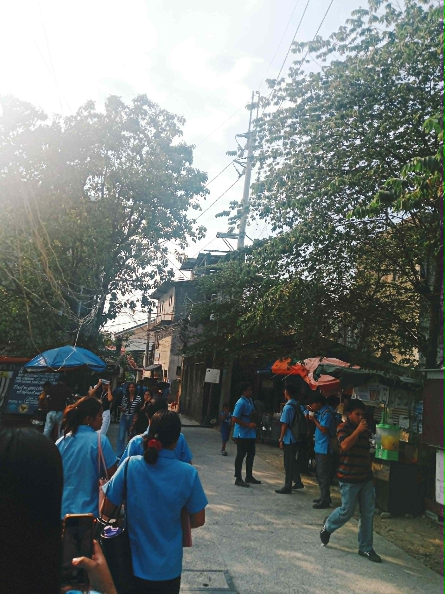
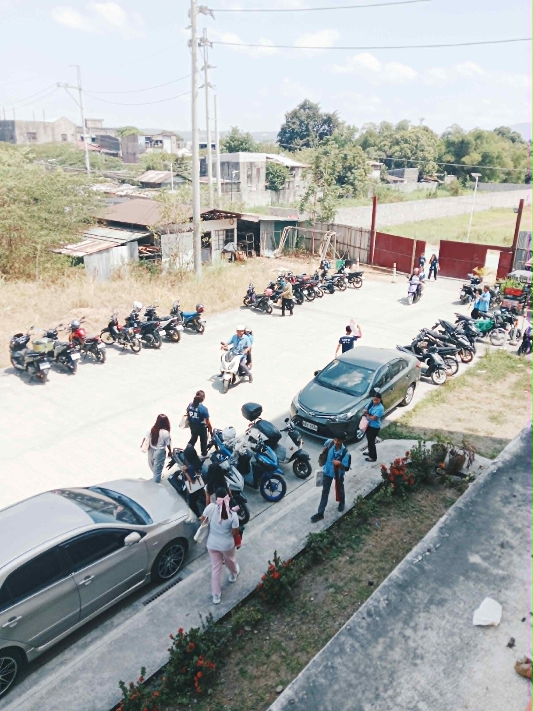
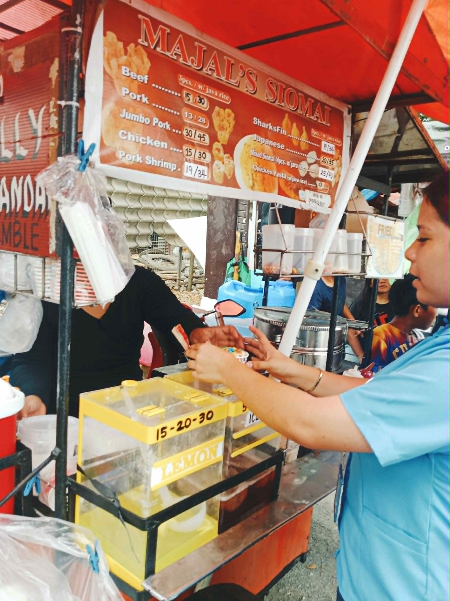
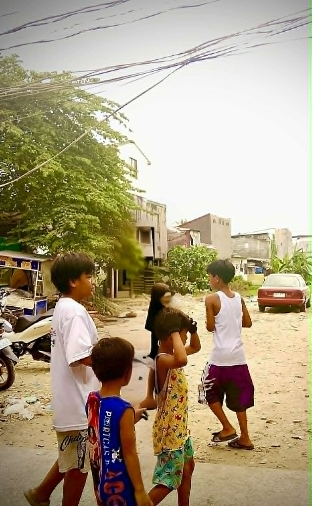

This picture represents the daily life of an SMMC student, walking home after a long and tiring day yet knowing that tomorrow will bring another chance to learn, grow, and continue the journey toward fulfilling one’s dreams. Day after day, we return to our beloved school where challenges test our strength, lessons shape our character, and every effort becomes part of the foundation for the future we aspire to achieve. Though the cycle can be exhausting, it remains a true honor and privilege to carry the name of being an SMMC student, for it symbolizes dedication, perseverance, and pride in belonging to a community that nurtures our potential.
1) What story does your photo tell?
This photo shows our everyday life when we go home after a long and tiring day. It's that familiar moment of walking together and passing by the stalls near school.
2)Why did you choose this subject?
I chose this subject because it shows real student life in San Mateo Municipal College. It's part of our daily routine, and I wanted to capture that simple but meaningful moment.
3) What elements such as lighting, composition, timing, & emotions make your photo effective?
The sunlight gave the photo a warm feeling, even though it was hard to control. The road in the photo leads the eye through the students and stalls, which makes the composition natural. The timing was good because I caught people moving, and that adds life to the picture.
4) What challenges did you encounter while taking the photo?
The hardest part was asking permission from people because I felt shy. I also struggled with the lighting, it was difficult to time it so the photo wouldn't look too bright or too dark.
5) How can you improve your shot next time?
Next time, I'll try to be braver in approaching people so I can capture them more naturally. I'll also practice with angles and timing to make the lighting better and the photo clearer.


